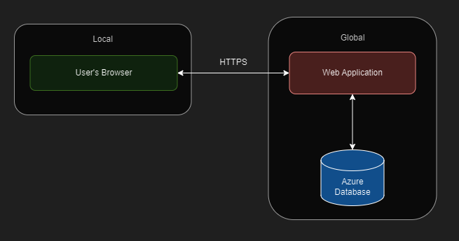
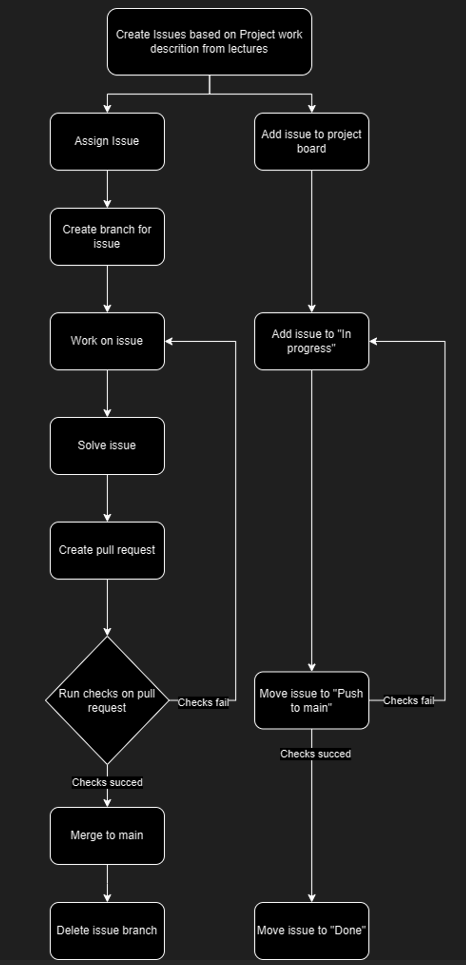
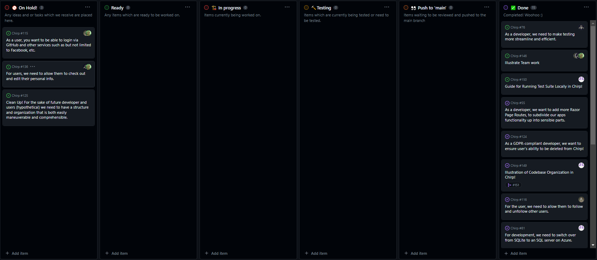

Due to a second round of lacking credits on our Azure Database, we decided to go back to our SQLite Database. Luckily we were already using sqlite when running the application in developer-mode, so we used that going forward.
The commit-hash for the latest version of Chirp! with hosted Azure database is:
ecb9a43f66883a64cd597735826ed7b143cd5b8c
The Chirp! platform initiates user engagement through a publicly available timeline, where non-authenticated visitors can read through user-generated content. This allows for a preliminary understanding of the platform’s community activities. Interested individuals are then guided to either log in, if they are returning users, or to register, should they be new to the community. The registration process is straightforward, requiring standard user information and adherence to password protocols.
Upon successful entry into the community, the user experience becomes personalized. The platform greets users by their chosen names and opens up a suite of interactive possibilities. Users can contribute their own content and engage with others through established social mechanisms. Furthermore, each user has access to a personal dashboard reflecting their activity and interactions within the community. Lastly, the user has the opportunity to delete all personal data using the “Forget me”-button.


Once you enter the root endpoint, Public, of our Chirp! application an HTTP Get Request is sent to our database and returns all of our cheeps to be displayed. Note that seeing all cheeps is possible for an unauthorized user whereas liking, following, and cheeping is not. When trying to log in or register a new account, the user will be redirected to the respective page. Logging in or registering an account is done by HTTP Post methods, which either validates the login or registers (i.e. creating a new author) the new account. In both cases, the user is redirected to the Public page, now with additional rights.

The CI/CD pipeline for the Chirp application starts with the developer committing code to the main branch or creating a pull request. GitHub Actions are then triggered to execute workflows defined in build_and_testing.yml and main_bdsagroup6chirprazor.yml (deployment). This ensures that each commit to the main branch undergoes a thorough process of integration, testing, and deployment, thereby maintaining the quality and reliability of the Chirp application with automated processes for efficiency and consistency.
Show a screenshot of your project board right before hand-in. Briefly describe which tasks are still unresolved, i.e., which features are missing from your applications or which functionality is incomplete.

Upon creating a new issue two synchronous timelines start simultaneously, one where the issue is being created, a branch made and the functionality implemented, while the other follow the timeline of the issue’s lifespan on the project board. A part of both timelines are iterative, meaning that if our implementation fails or does not live up to the requirements, we will work continuously until the branch can be successfully merged into main. Then, and only then, will our issue be moved to ‘Done’ in our project board.

We’ve cleaned our project board making sure we’ve finished our ongoing issues. We moved nice-to-have features to the on-hold column focusing on finishing up higher priority issues based on project requirements.
Here is a brief description of some of the issues and ideas for future development.
We tried repeatedly to solve this issue, but were unable to make it work. Since we had many high priority issues, and the problem persisted, we decided to let go of it and rely solely on our own account system.
The aim of this feature was for the user to be able to change their username or associated email. The thought was directed towards giving the users more control of their accounts.
Adding comments to cheeps would aim the application towards a more socially interactive state, where users would be able to somewhat communicate directly to eachother. For further development, we believe that adding this functionality would have a great impact on the user’s experience. We went as far as implementing a button for this purpose, but without functionality. The idea was to make a new entity called Comment, which would hold a reference to a certain cheep and author.
We implemented a way to show pictures on the user’s profile, but never got around to finish it up and allow users to actually upload one. This feature would add more customization, allowing users to better express themselves and maybe lay some groundwork for future image-cheeps.
This guide assists new contributors, like Rasmus and Helge, in setting up the Chirp! project locally.
appsettings.json in the project root is
correctly configured and contains:“ConnectionStrings”: { “DefaultConnection”: “Server=tcp:bdsagroup6chirpserver.database.windows.net,1433;Initial Catalog=bdsagroup6chirpdb;Persist Security Info=False;User ID=chripadmin;Password=chirpdbPassword;MultipleActiveResultSets=False;Encrypt=True;TrustServerCertificate=False;Connection Timeout=30;” }, “Authentication”: { “GitHub”: { “ClientIdAzure”: “564f6fd9fd6c86a8ea02”, “ClientSecretAzure”: “GitHub:ClientSecretAzure”, “ClientIdLocal”: “968faf4d2e8bfa8fe03f”, “ClientSecretLocal”: “GitHub:ClientSecretLocal” } }
dotnet build
direct to Chirp.Web from the root directory using:
cd ..Web
Then you have two options, running in Delevoper mode (runs sqlite) or production mode (ran on the azure SQL)
Delevoper command: dotnet run -lp Dev Production command: dotnet run -lp Prod
If the command isn’t recognized, then developer-mode will run by default with the command “dotnet run”
appsettings.json configurations. Check for database
connectivity issues if applicable.To run the tests, do the following:
Navigate to the root directory and run command: “dotnet test”
Our test-directory consists of a number of XUnit tests. Here we make sure, that our application is always running, handling data and executing requests as intended. As an exmample, we made tests for methods in CheepRepository and AuthorRepository, to make sure that every time we make changes, it will always be able to handle cheeps and users correctly. To make sure that our test environment will also be the same and also making sure it won’t change anything in our current database, we implemented an in-memory test environment. This will create a database for us on demand, without having to store it somewhere or look for existing files. This also insures that we have a fresh database without using unnecessary storagespace.
Besides our test-directory, we’ve made other kinds of tests. We used user testing by having other people try out our application and then used the feedback for further development. A good example would be our delete cheep button. One of our testers mentioned it would make sense that you could only delete cheeps from the profile page. We thought that would make sense and went on to implement that feature. Visual testing was also part of our process. Running the application and testing new and existing features by using them and confirming the results.
Using ASP.NET Core Identity for our login and registration functionality ensures heightened security for users since their passwords are automatically hashed, making it impossible for cyber criminals to abuse users’ accounts if they hack into our database without being able to decrypt the hashed passwords.
Using ASP.NET Core Identity also ensures uniqueness constraints which creates a more robust set of users since users can not easily be replicated. In addition to this, by adding the ability to create username, people can specify their own level of anonymity on the platform since their emails are not visible between users.
In order to be compliant with GDPR which reflects current data ethics, we have implemented a “Forget Me” feature which ensures that users at any point in time can delete their accounts along with the cheeps they have posted. This functionality not only promotes compliance but also promotes trust between creator and user.
Pairing the anonymity feature with unrestricted language use we aim to create a community rooted in principles of free speech and inclusivity. The introduction of ‘Like’ and ‘Dislike’ functionalities promotes an environment where free speech is maintained by the community rather than enforced by the creators.
In our group we decided to opt for the MIT license as it is open source, allowing others to freely use the software without providing legal obligations on the software creators thus ensuring that they bear no legal liability in the case of software malfunctioning, data loss, etc.
During the development of Chirp!, we utilized ChatGPT, a Large Language Model (LLM), as a supportive tool. ChatGPT played a significant role in our development process, primarily in code generation, debugging and providing insights into best practices in .NET development. It served as an on-demand resource for programming suggestions, offering immediate assistance in clarifying concepts and solving complex coding challenges. This not only accelerated our development cycle but also enhanced our understanding of various aspects of .NET. While ChatGPT proved to be an invaluable asset in streamlining our workflow, we ensured that all code and architectural decisions were meticulously reviewed and tested by our team. This approach maintained the integrity and originality of our project, ensuring that the final product reflected our team’s skills and dedication to quality.